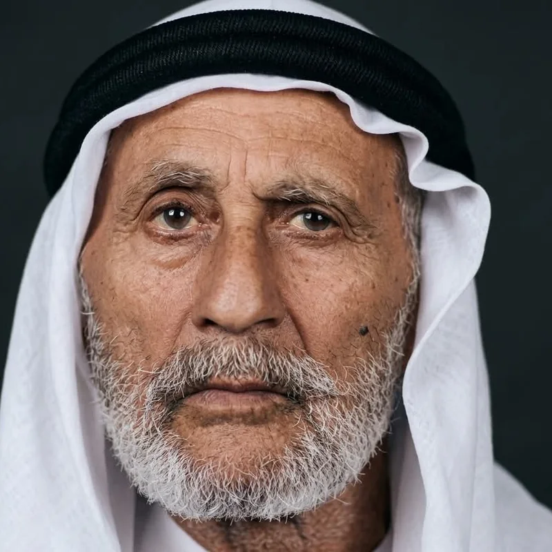
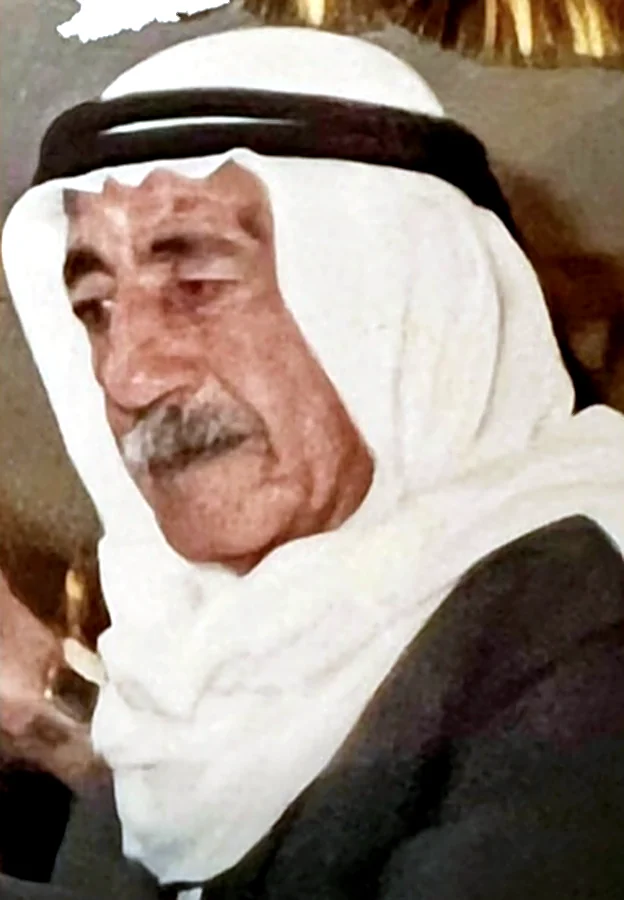
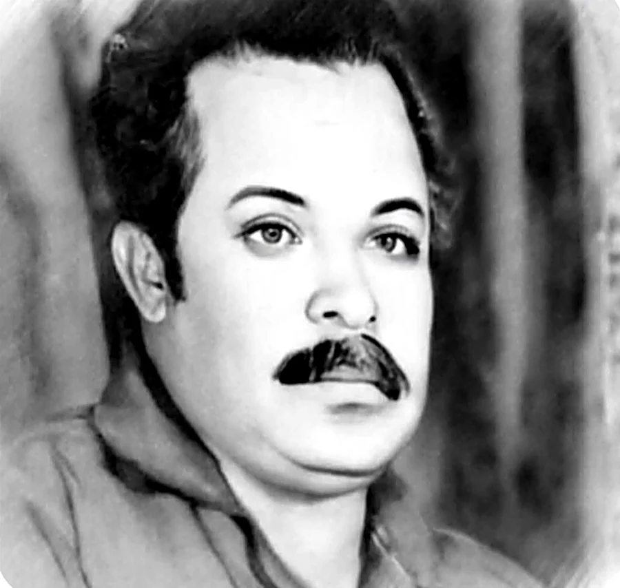
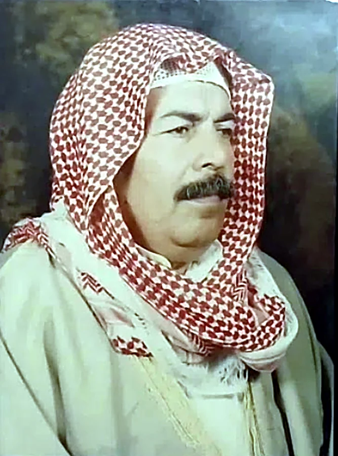

رحمه الله
من كبارنا · الجيل الأول
الحاج محمد مصطفى محمد قدادة
جدّنا الكبير من فرع مصطفى في غزة، ومنه تفرّع بيتنا. أبناؤه: غطاس وسعيد وعبد.
غزة · فلسطين — منذ القرن الثاني عشر الهجري
أصالةُ الماضي ·· وقوةُ الحاضر ·· وطموحُ المستقبل
نحن آل قدادة. جذورنا في تراب غزة، وأغصاننا اليوم في القاهرة وعمّان والخبر وتورنتو وغيرها. جمعنا في هذا البيت حكاية أجدادنا كما وصلتنا، وصور كبارنا، وشجرة نكمل أغصانها معًا، جيلًا بعد جيل.
جذورنا
في محلة الدرج، من أعرق أحياء غزة القديمة، نجد أقدم ذكرٍ مؤرَّخ لواحدٍ من أجدادنا: الحاج جمعة قدادة، سنة 1175هـ (1761–1762م). أصلنا من غزة. ثم انتقل أجدادنا إلى يافا وسكنوا فيها، وبقي جزءٌ من العائلة هناك، وعاد الباقون إلى غزة من جديد. هكذا صار لنا في المدينتين أهلٌ وذاكرة.
جزءٌ من عائلتنا عاش في يافا حتى نكبة 1948. يذكر سجلٌّ منشور عام 2020 لعائلات يافا اسمَ قدادة صراحةً ضمن عائلات حيّ العجمي. وهو تجميعٌ لاحق لشهادات الأهالي، لا سجلٌّ رسمي من زمن الانتداب، لكنه يحفظ أثرنا هناك.
كبارنا
جدّنا الحاج محمد مصطفى، ثم ابنه الحاج غطاس، ثم حفيده الحاج مصطفى غطاس. ثلاثة أجيال من كبارنا، أبٌ عن جد، ومن بيوتهم تفرّعت أغصانٌ كثيرة من شجرتنا. رحمهم الله وأسكنهم فسيح جناته.

رحمه اللهجدّنا الكبير من فرع مصطفى في غزة، ومنه تفرّع بيتنا. أبناؤه: غطاس وسعيد وعبد.
سار على درب والده، ويرد اسمه «غطاس محمد قدادة» في وثيقة مؤرخة عام 1953. أبناؤه: مصطفى وأحمد ومحمود وسليم وحسن وخليل.
سار على درب أبيه وجدّه، فكان كبير العائلة ومرجعها. نذكره بمجلسه المفتوح وكلمته المسموعة، وبالذرية الطيبة التي تركها تحمل اسمه وتصون إرثه.
وجوه من عائلتنا

رحمه اللهأبناؤهعدنانعادلزيادعمادأسامة
أبناؤهمحمدغالبزهيرسهيلسعدسعدونافذناصرزكيفرج
أبناؤهأحمدمحمدمصطفىفوزيفؤاد

أبناؤهأحمدساميسميحعمادسامر

أبناؤهمحمدسعيد
عندك صورة لجدّك أو عمّك؟ كل صورة نضيفها تُرجع وجهًا إلى الشجرة. أضفها من شجرة العائلة، أو أرسلها لنا لنضيفها.
شجرة العائلة
من جدّنا محمد قدادة يتفرّع غصنا يافا وغزة. ابحث عن اسمك أو اسم والدك، وتنقّل بين الآباء والأبناء، واضغط على أي اسم لترى نسبه كاملًا. وإن وجدت اسمًا ناقصًا فأضفه، فالشجرة لا تكتمل إلا بنا جميعًا.
اضغط على أي اسم ليظهر أبناؤه تحته، ثم على أحد الأبناء ليظهر أبناؤه، وهكذا جيلًا بعد جيل. وزر i للتفاصيل والنسب الكامل.
أصل الاسم
سؤالٌ يسأله صغارنا قبل كبارنا. عندنا ثلاثة تفسيرات، ولم نجد بعدُ نصًّا تاريخيًّا يحسم أيًّا منها، فنضعها أمامكم كما هي.
أن يكون «قدادة» اسمًا أو لقبًا لجدٍّ أقدم من جدّنا محمد، ثم صار لقبًا لذريته من بعده. وهكذا نشأت ألقاب كثير من العائلات، وربما كان صاحب اللقب أقدم بكثير ممن نعرفهم في شجرتنا.
ما زلنا لا نعرف اسم والد جدّنا محمد، ولا يذكر الطباع سبب التسمية.
ذكر ابن حزم وابن الأثير بطنًا عربيًّا اسمه «بنو قداد» من قبيلة بجيلة، ويتداول بعضنا روايةً تنسبنا إليه. ومنذ وجدنا هذا الاسم في كتب الأنساب صار الاحتمال يستحق أن نبحث فيه بجد.
لم يُثبت حتى الآن بسلسلة نسبٍ متصلة.
من معاني الجذر (ق د د) في معاجم العربية: شقُّ الشيء طولًا. ومنه «القِدّ» وهو السير المقطوع من الجلد، و«القِدّة» وهي القطعة. فربما ارتبط اللقب بحرفةٍ عمل بها أحد أجدادنا.
لا يعرّف أي معجم «قدادة» مهنةً، ولا عندنا وثيقة تقول إن جدّنا عمل بحرفةٍ أخذ منها لقبه.
في كتب الأنساب
حين بحثنا في كتب الأنساب القديمة وجدنا اسم «قداد» حاضرًا فيها، عند ابن حزم وابن الأثير، مرتبطًا بقبيلة بجيلة. اسمٌ عمره قرون، لا لقبٌ حديث.
ابن حزم الأندلسي (توفي 456هـ / 1064م)
يذكر ضمن بطون قبيلة بجيلة رجلًا اسمه قداد بن ثعلبة، ويذكر بني قداد ضمن الفروع القبلية.
ابن الأثير الجزري (توفي 630هـ / 1233م)
يشرح نسبة «القدادي»، ويقول إنها إلى «قداد»، وهو بطنٌ من بجيلة، ويورد سلسلة نسب قداد.
النسب الذي تذكره كتب الأنساب
النسب القبلي لقداد بن ثعلبة في المصادر الوسيطة، وليس نسبًا مثبتًا لعائلة قدادة الفلسطينية.
نعرف أن «قداد بن ثعلبة» موجود في التاريخ العربي، لكننا لم نثبت بعدُ أن جدّنا محمد قدادة من ذريته. ونحن نفضّل أن نقول «لا نعرف بعد» على أن ننسب لأنفسنا ما لم يثبت.
ما يرويه أهلنا
في كل بيت من بيوتنا روايةٌ عن أصلنا. جمعنا أهمها، ووضعنا بجانب كلٍّ منها ما وجدناه من مصادر.
كتب ابن عمّنا عمران معاذ موسى علي أحمد علي محمد قدادة شهادةً نُشرت بتاريخ 5 ديسمبر 2025، ذكر فيها بيت أهلنا في حيّ العجمي بيافا، وأن فرعينا يرجعان إلى جدٍّ واحد.
قيمتها أنها تسمّي الجد وتحدد الفرعين، بينما تكتفي الروايات الأخرى بالحديث العام عن أصل مصري أو عربي. وما زلنا نطابقها مع مخطوط الطباع ووثائق بيوتنا.
رسمٌ يوضح الرواية كما وصلتنا، لا شجرة نسب محققة.
مسيرتنا
ابن حزم يذكر قداد بن ثعلبة ضمن بطون بجيلة في «جمهرة أنساب العرب».
ابن الأثير يشرح النسبة في «اللباب في تهذيب الأنساب»، ويورد سلسلة نسب قداد.
أقدم جدٍّ نعرف له سنةً محددة، من آل قدادة في محلة الدرج بغزة.
يُذكر اسمنا ضمن عائلات حيّ العجمي، وفرع يافا من ذرية علي بن محمد.
هُجّر من بقي من أهلنا في يافا، فعادوا إلى غزة من جديد.
وثيقة مؤرخة تحمل اسم جدّنا الحاج غطاس محمد قدادة، من فرع مصطفى في غزة.
من الحاج محمد مصطفى قدادة إلى ابنه الحاج غطاس، ثم إلى حفيده الحاج مصطفى غطاس قدادة، كبير العائلة.
من روّاد كرة القدم الفلسطينية. تذكره دراسة عن تاريخ الكرة في قطاع غزة، نشرتها مؤسسة الدراسات الفلسطينية، بين أبرز لاعبي جيله، ثم سافر إلى الإمارات مدرّسًا.
من غزة إلى القاهرة وكفر الشيخ وعمّان والخبر، ثم تركيا وبلغاريا وروسيا، وبلجيكا وإيرلندا والسويد وإسبانيا، وحتى جرين باي وتورنتو. تفرّقت بيوتنا، وبقي الاسم يجمعنا.
أين نحن اليوم
أصلنا من غزة، ومنها انتقلنا إلى يافا ثم عدنا إليها. كل خيطٍ على هذه الخريطة يبدأ من هنا.
أهلنا في القاهرة وكفر الشيخ بمصر، وعمّان في الأردن، والخبر في السعودية.
لنا أغصانٌ في تركيا وبلغاريا وروسيا، وفي بلجيكا وإيرلندا والسويد وإسبانيا.
وأبعد غصوننا في جرين باي (ويسكونسن) بالولايات المتحدة، وتورنتو في كندا.
أمانة في أعناقنا
نفرّق في بيتنا هذا بين ما ثبت بوثيقة، وما سمعناه من أجدادنا، وما زلنا نبحث فيه. نحفظ الرواية لأنها ذاكرتنا، ونوثّقها لأنها حقٌّ لأبنائنا من بعدنا.
اسأل جدّك وجدّتك، وافتح صندوق الصور القديم. كل ورقةٍ وصورةٍ وحكاية تضيف غصنًا إلى شجرتنا. أرسلها لنا، أو أضف الاسم بنفسك.
أضف معلومة